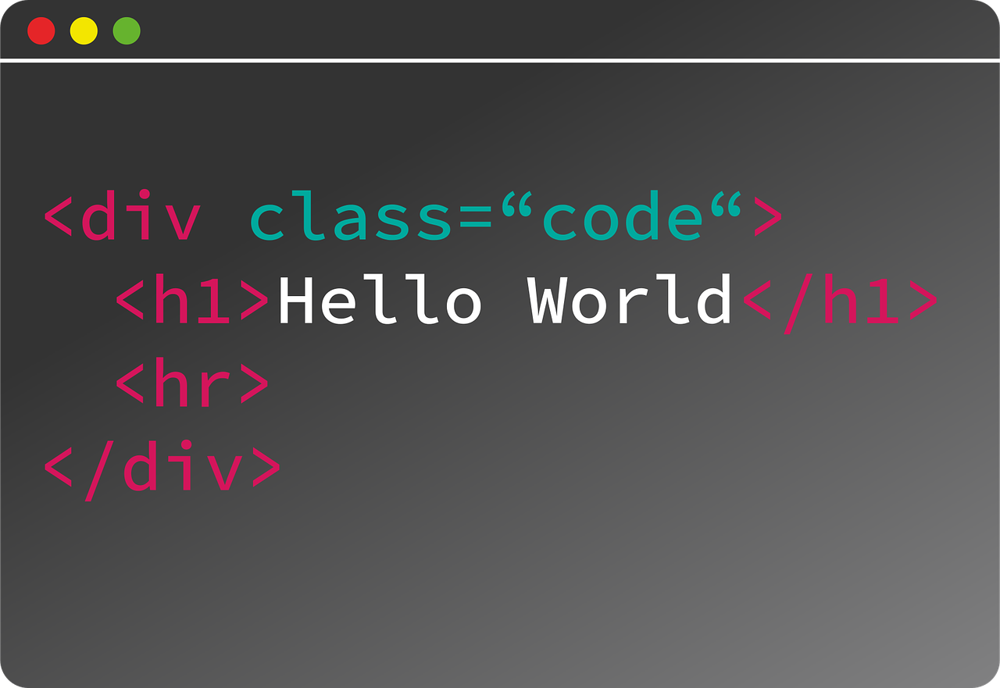
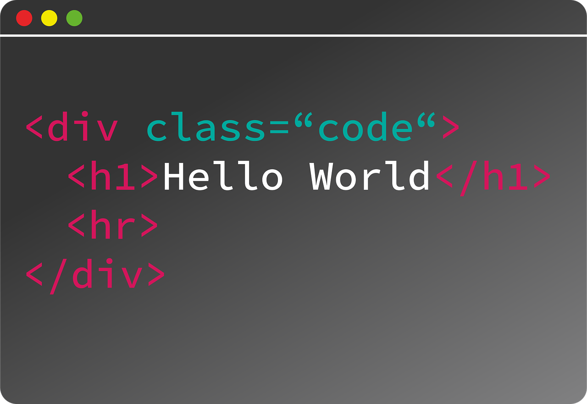

G600 Computer Science (Software Engineering) BEng
Year 1
COM1001 - Introduction to Software Engineering
Introduces software engineering, and the concept of developing software which can meet basic functional criteria.
COM1002 - Foundations of Computer Science
Teaches mathematical concepts that are essential for computing. It is the foundation for every other computing module.
COM1003 - Java Programming
Introduces and teaches programming in the Java language, a high level, general purpose OOP language.
COM1005 - Machines and Intelligence
Introduces artificial intelligence, outlining its usage, history and key concepts and problems in the field of AI.
COM1006 - Devices and Networks
Teaches the fundamental aspects of technology - computer architecture, digital logic and arithmetic.
COM1008 - Web and Internet Technology
Teaches front-end web development in HTML, CSS and JavaScript, as well as legal requirements for websites.

 
